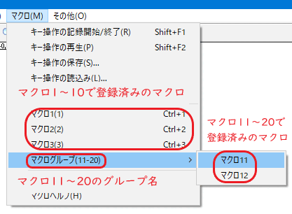
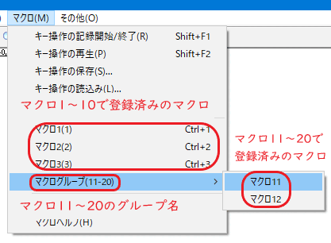

- マクロを登録したのにメニューに表示されません。

メニューの「マクロ」に直接表示されるのは「マクロ1〜10」までです。
「マクロ11」以降は「グループ名」が設定されていれば、グループ名と同じメニューが表示され、そのサブメニューの項目に登録してあるマクロが表示されます。

メニューの「マクロ」に直接表示されるのは「マクロ1〜10」までです。
「マクロ11」以降は「グループ名」が設定されていれば、グループ名と同じメニューが表示され、そのサブメニューの項目に登録してあるマクロが表示されます。
